pacman::p_load(tidyverse, readr, readxl, downloader, rio, plotly, knitr, pander, ggthemes, ggrepel, directlabels, gapminder, dplyr, nycflights13, Lahman, priceR, riem, USAboundaries, USAboundariesData, sf, stringr, stringi, reticulate)DS 350 Final Poject
A visual/analysis on NFL data
nfl_data_set <- read_csv("C:/Users/aaron/OneDrive/Desktop/nfl_data/team_stats_2003_2023.csv")Cleaning the data set
nfl_data_cleaned <- nfl_data_set %>%
select(-mov, -g, -exp_pts_tot) %>%
mutate(team = str_replace_all(team, "Oakland Raiders", "Las Vegas Raiders"),
team = str_replace_all(team, "Washington Redskins", "Washington Commanders"),
team = str_replace_all(team, "Washington Football Team", "Washington Commanders"),
team = str_replace_all(team, "San Diego Chargers", "Los Angeles Chargers"),
team = str_replace_all(team, "St. Louis Rams", "Los Angeles Rams"),
ties = as.numeric(ties),
ties = replace_na(ties, 0),
division = case_when(
team %in% c("Buffalo Bills", "Miami Dolphins", "New England Patriots", "New York Jets") ~ "AFC East",
team %in% c("Baltimore Ravens", "Cincinnati Bengals", "Cleveland Browns", "Pittsburgh Steelers") ~ "AFC North",
team %in% c("Houston Texans", "Indianapolis Colts", "Jacksonville Jaguars", "Tennessee Titans") ~ "AFC South",
team %in% c("Denver Broncos", "Kansas City Chiefs", "Las Vegas Raiders", "Los Angeles Chargers") ~ "AFC West",
team %in% c("Dallas Cowboys", "New York Giants", "Philadelphia Eagles", "Washington Commanders") ~ "NFC East",
team %in% c("Chicago Bears", "Detroit Lions", "Green Bay Packers", "Minnesota Vikings") ~ "NFC North",
team %in% c("Atlanta Falcons", "Carolina Panthers", "New Orleans Saints", "Tampa Bay Buccaneers") ~ "NFC South",
team %in% c("Arizona Cardinals", "Los Angeles Rams", "San Francisco 49ers", "Seattle Seahawks") ~ "NFC West",
TRUE ~ NA_character_
))
glimpse(nfl_data_cleaned)Rows: 672
Columns: 33
$ year <dbl> 2003, 2003, 2003, 2003, 2003, 2003, 2003, 2003, 2…
$ team <chr> "New England Patriots", "Miami Dolphins", "Buffal…
$ wins <dbl> 14, 10, 6, 6, 10, 8, 6, 5, 12, 12, 5, 5, 13, 10, …
$ losses <dbl> 2, 6, 10, 10, 6, 8, 10, 11, 4, 4, 11, 11, 3, 6, 1…
$ win_loss_perc <dbl> 0.875, 0.625, 0.375, 0.375, 0.625, 0.500, 0.375, …
$ points <dbl> 348, 311, 243, 283, 391, 346, 300, 254, 447, 435,…
$ points_opp <dbl> 238, 261, 279, 299, 281, 384, 327, 322, 336, 324,…
$ points_diff <dbl> 110, 50, -36, -16, 110, -38, -27, -68, 111, 111, …
$ total_yards <dbl> 5039, 4609, 4348, 4951, 4929, 5329, 4792, 4504, 5…
$ plays_offense <dbl> 1042, 968, 980, 936, 1009, 1038, 1020, 961, 1041,…
$ yds_per_play_offense <dbl> 4.8, 4.8, 4.4, 5.3, 4.9, 5.1, 4.7, 4.7, 5.6, 5.4,…
$ turnovers <dbl> 24, 34, 34, 20, 38, 22, 28, 33, 20, 21, 31, 27, 1…
$ fumbles_lost <dbl> 11, 15, 17, 6, 19, 7, 11, 15, 10, 12, 14, 9, 6, 6…
$ first_down <dbl> 294, 266, 268, 274, 259, 313, 275, 276, 348, 310,…
$ pass_cmp <dbl> 320, 257, 293, 312, 217, 324, 306, 313, 381, 315,…
$ pass_att <dbl> 537, 450, 502, 496, 415, 520, 532, 509, 569, 502,…
$ pass_yds <dbl> 3432, 2792, 2684, 3316, 2255, 3342, 3304, 2834, 4…
$ pass_td <dbl> 23, 17, 11, 20, 16, 26, 19, 17, 29, 30, 17, 14, 2…
$ pass_int <dbl> 13, 19, 17, 14, 19, 15, 17, 18, 10, 9, 17, 18, 12…
$ pass_net_yds_per_att <dbl> 6.0, 5.8, 4.9, 6.3, 4.9, 6.0, 5.8, 5.2, 7.1, 7.4,…
$ pass_fd <dbl> 177, 145, 150, 181, 121, 181, 174, 153, 212, 211,…
$ rush_att <dbl> 473, 487, 427, 409, 552, 481, 446, 412, 453, 486,…
$ rush_yds <dbl> 1607, 1817, 1664, 1635, 2674, 1987, 1488, 1670, 1…
$ rush_td <dbl> 9, 14, 13, 8, 18, 12, 10, 8, 16, 11, 13, 14, 32, …
$ rush_yds_per_att <dbl> 3.4, 3.7, 3.9, 4.0, 4.8, 4.1, 3.3, 4.1, 3.7, 3.3,…
$ rush_fd <dbl> 91, 99, 96, 78, 115, 101, 77, 91, 104, 84, 118, 8…
$ penalties <dbl> 111, 103, 106, 69, 126, 107, 111, 98, 92, 110, 10…
$ penalties_yds <dbl> 998, 913, 891, 550, 970, 846, 1005, 767, 662, 887…
$ pen_fd <dbl> 26, 22, 22, 15, 23, 31, 24, 32, 32, 15, 24, 24, 2…
$ score_pct <dbl> 27.9, 28.1, 21.9, 32.4, 31.8, 33.3, 27.1, 26.7, 4…
$ turnover_pct <dbl> 11.3, 17.2, 17.6, 11.8, 16.6, 11.1, 13.5, 17.2, 1…
$ ties <dbl> 0, 0, 0, 0, 0, 0, 0, 0, 0, 0, 0, 0, 0, 0, 0, 0, 0…
$ division <chr> "AFC East", "AFC East", "AFC East", "AFC East", "…#unique(nfl_data_set$team)
#unique(nfl_data_cleaned$team)Data Wrangling Issues/Solutions
The main problems with the wrangling this data set is making it so that all the teams that were the same would still be classified. For example, There were a lot of teams that have moved to different locations over the last 2 decades, as well as a re branding of a team. The main teams that faced that issue were the Rams, Raiders, Chargers, and the Commanders. Because this data set has the name of the city or state first, some teams were called by the city then the mascot. So in order to change that, I set them to where their present day team are. The next hiccup was with the Washington Commanders. All the way until 2020, the commanders were known as the redskins. They changed their name to the Washington Football Team for a season or two, but then eventually landed on the Commanders as their team name. So in order to see how they did as a who over the last couple decades, I changed the name so that way it would be their present day names.
Another thing that I noticed with this data set is that there were a lot of different stats that were in this data set, but they were not important to me, so I filtered them out so that way they would not produce a problem for me in the long run. Some of these included mov (margin of victory), g(games played), and exp_pts_tot columns. These columns did not seem necessary to me while making these visuals, so I filtered them out here.
The other issue was that there were a lot of NA in the ties column. These NA were blank in the spreed sheet because there was no ties during that season. Other season had some ties. So I replaced all of the NA in the Ties column with 0 because there was a value.
Visuals/Funcitons for Specific Teams/Divisions/seasons
During this part, I made multiple different visualizations to highlight specific data, such as wins in a specific season, point differential changes for a team, or how division teams win totals are different. Before each visual, there is a subtitle to highlight what each code is producing. Some may not have functions or filters, but I am hoping that the visuals still help.
Yards per Season
yards_per_season <- function(season){
season_yards <- nfl_data_cleaned %>%
filter(year == season)
ggplot(season_yards, aes(x = total_yards, y = reorder(team, total_yards), fill = division)) +
geom_col() +
theme_classic() +
scale_x_continuous(labels = scales::comma) +
theme(
legend.position = "bottom"
)+
labs(
title = paste0(season, " Season"),
x = "Total Yards",
y = "Team"
)
}Examples
In these visuals, you can see that there are different visuals for the total yards that each team was able to get over the different seasons. This is filtered out by the seasons, so you input what year you want to see and it will sort it from the team with the most years to the team with the least amount of yards.
yards_per_season(2005)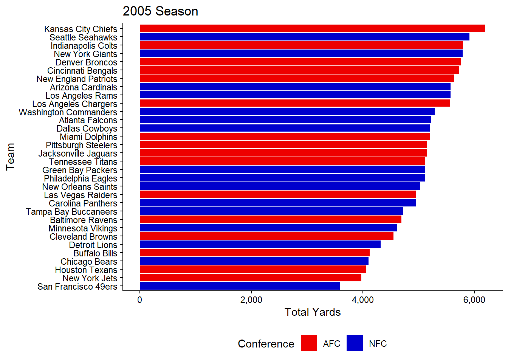
yards_per_season(2020)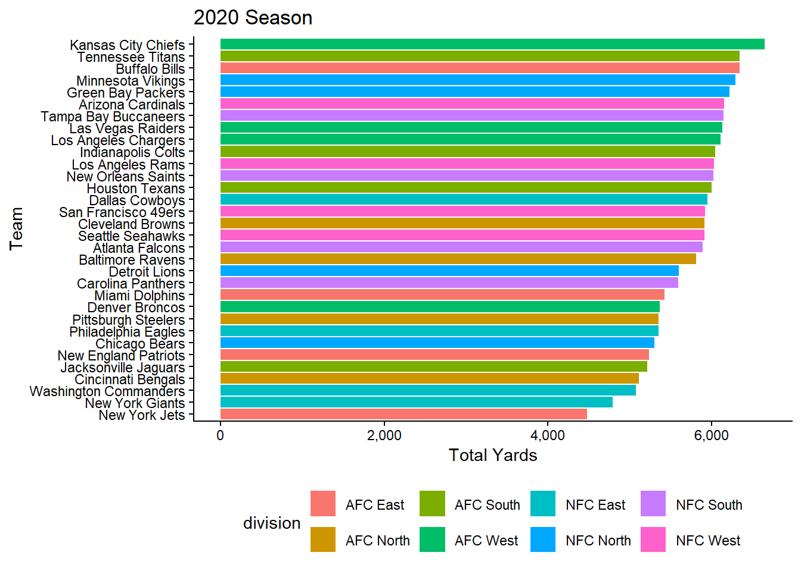
Point Differential Visual
point_differential_visualization <- function(team_name) {
team_data <- nfl_data_cleaned %>%
filter(team == {{team_name}}) %>%
mutate(result = if_else(points_diff > 0, "Positive", "Negative"))
ggplot(team_data, aes(x = year, y = points_diff, fill = result)) +
geom_col() +
geom_text(
aes(label = points_diff,
vjust = if_else(points_diff >= 0, -0.5, 1.5)),
size = 3
) +
scale_fill_manual(values = c("Positive" = "green4", "Negative" = "red3")) +
theme_bw()+
theme(legend.position = "none",
panel.grid.major.x = element_blank(),
panel.grid.minor.x = element_blank()) +
labs(
title = team_name,
subtitle = "This is the point differential from 2003 to 2023",
x = "Years",
y = "Point Differential"
)
}Examples
These are following examples of how the point differential is visualized. This shows how each team has done verses all of there other teams. The point differential is shown to visualize if they scored more points overall in a season or less points overall in a season
point_differential_visualization("New York Giants")
point_differential_visualization("Los Angeles Rams")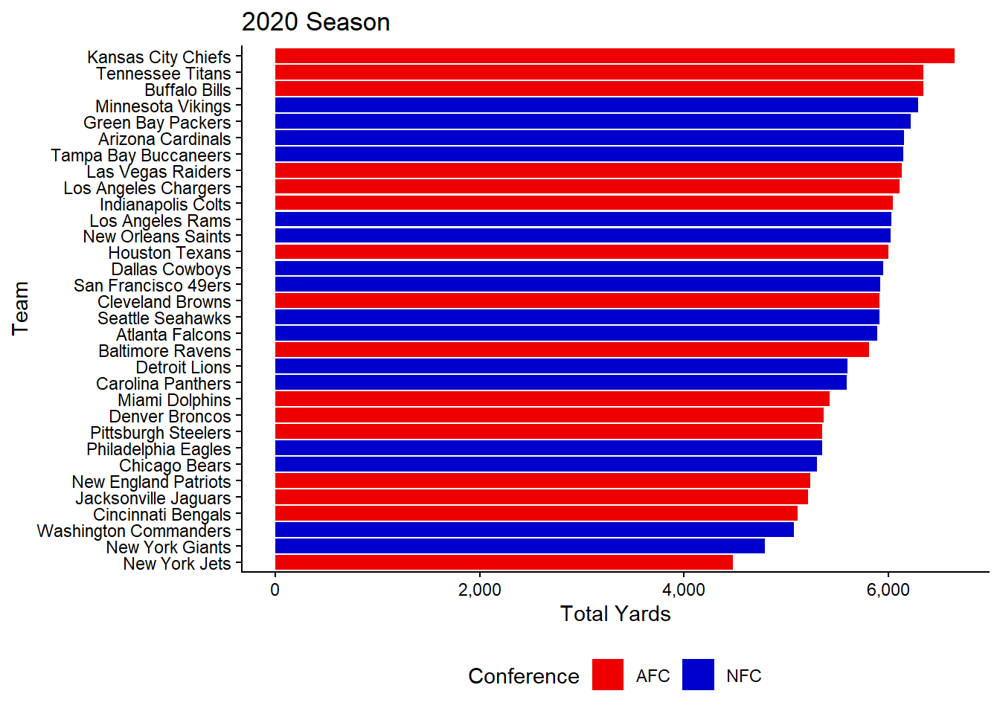
point_differential_visualization("New England Patriots")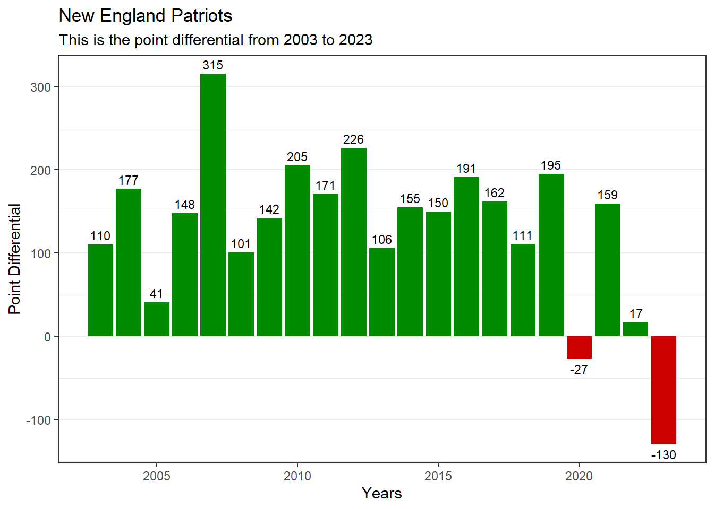
Wins by Divisions
specific_division <- function(division_name) {
team_specific <- nfl_data_cleaned %>%
filter(division == division_name)
team_colors <- c(
# NFC North
"Chicago Bears" = "#0B162A", "Detroit Lions" = "#0076B6", "Green Bay Packers" = "#203731", "Minnesota Vikings" = "#4F2683",
# NFC South
"Atlanta Falcons" = "#A71930", "Carolina Panthers" = "#0085CA", "New Orleans Saints" = "#D3BC8D", "Tampa Bay Buccaneers" = "#D50A0A",
# NFC East
"Dallas Cowboys" = "#003594", "New York Giants" = "#0B2265", "Philadelphia Eagles" = "#004C54", "Washington Commanders" = "#5A1414",
# NFC West
"Arizona Cardinals" = "#97233F", "Los Angeles Rams" = "#003594", "San Francisco 49ers" = "#AA0000", "Seattle Seahawks" = "#002244",
# AFC North
"Baltimore Ravens" = "#241773", "Cincinnati Bengals" = "#FB4F14", "Cleveland Browns" = "#311D00", "Pittsburgh Steelers" = "#FFB612",
# AFC South
"Houston Texans" = "#03202F", "Indianapolis Colts" = "#002C5F", "Jacksonville Jaguars" = "#006778", "Tennessee Titans" = "#0C2340",
# AFC East
"Buffalo Bills" = "#00338D", "Miami Dolphins" = "#008E97", "New England Patriots" = "#002244", "New York Jets" = "#125740",
# AFC West
"Denver Broncos" = "#FB4F14", "Kansas City Chiefs" = "#E31837", "Las Vegas Raiders" = "#000000", "Los Angeles Chargers" = "#0080C6"
)
division_graph <- ggplot(team_specific, aes(y = wins, x = year, color = team)) +
geom_line() +
scale_x_continuous(limits = c(NA, 2027), breaks = c(2000, 2005, 2010,2015,2020)) +
scale_y_continuous(breaks = c(2,4,6,8,10,12,14,16))+
scale_color_manual(values = team_colors) +
theme_classic() +
theme(
legend.position = "none",
plot.margin = margin(5, 90, 5, 5),
axis.line.y = element_line(color = "black", linewidth = 0.5),
axis.line.x = element_line(color = "black", linewidth = 0.5),
panel.grid.major.y = element_line(color = "gray80", linewidth = 0.3),
panel.grid.major.x = element_line(color = "gray80", linewidth = 0.3),
panel.grid.minor.y = element_line(color = "gray90", linewidth = 0.2)
) +
geom_text_repel(
data = team_specific %>% filter(year == max(year)),
aes(label = team),
size = 3,
nudge_x = 2,
direction = "y",
hjust = 0,
segment.size = 0.3
) +
coord_cartesian(clip = "off")+
labs(
title = division_name
)
return(division_graph)
}NFC Teams Wins
These charts show each teams win total in a season against everyone else in their specific division. This can help show if there is a division winner in the season. This section is for NFC teams
specific_division("NFC South") 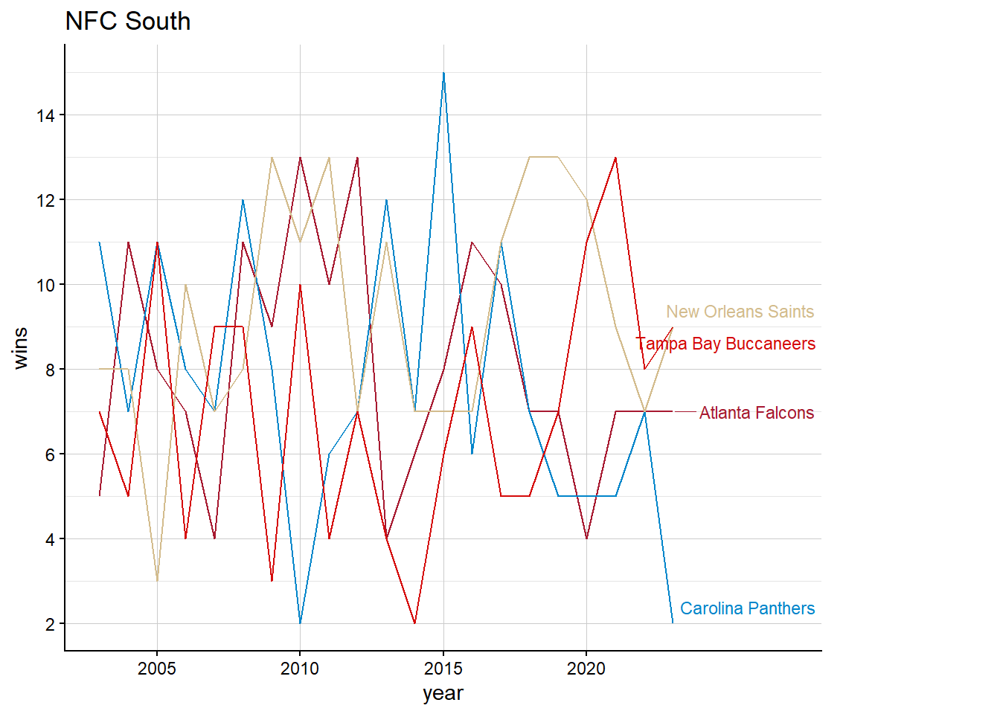
specific_division("NFC North")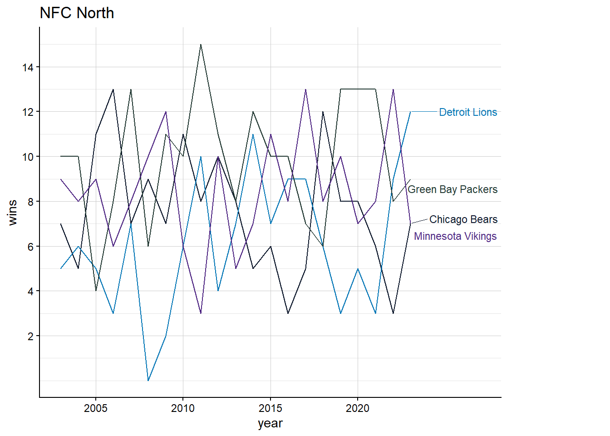
specific_division("NFC West")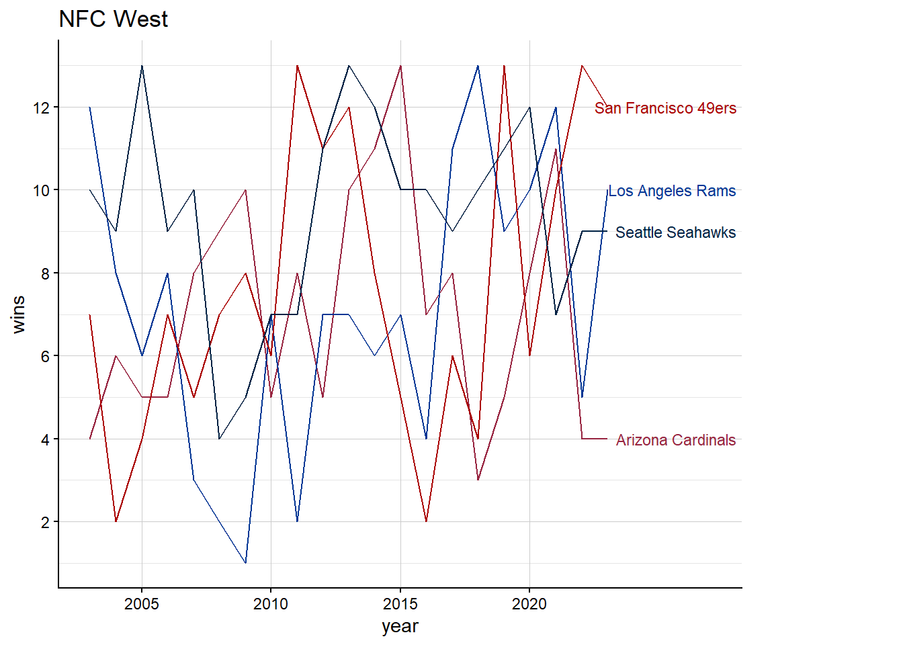
specific_division("NFC East")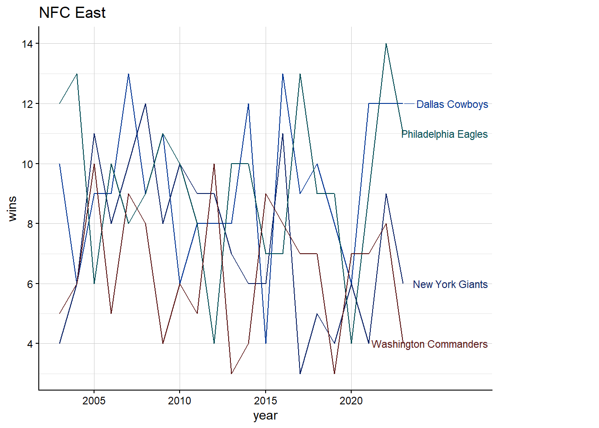
AFC Teams Wins
These charts show each teams win total in a season against everyone else in their specific division. This can help show if there is a division winner in the season. This section is for AFC teams
specific_division("AFC South")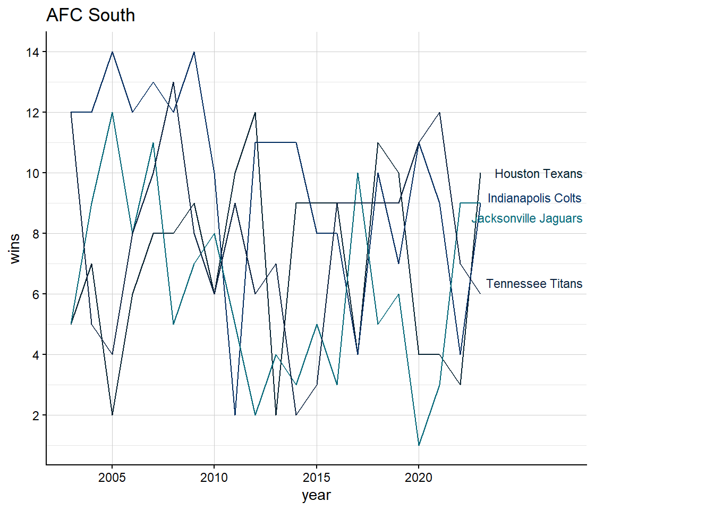
specific_division("AFC North")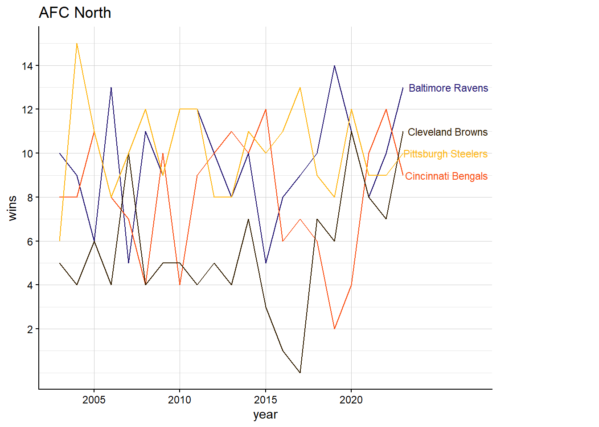
specific_division("AFC West")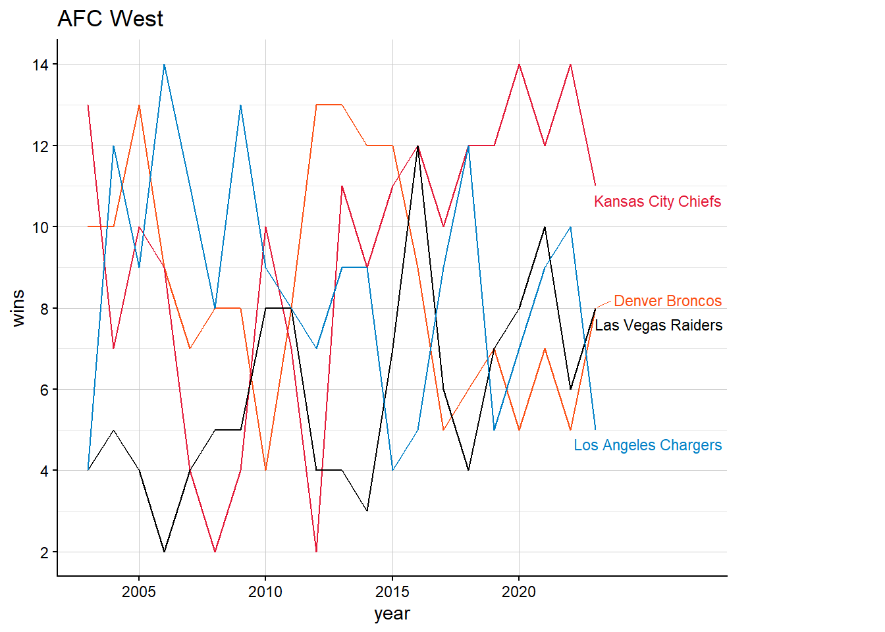
specific_division("AFC East") 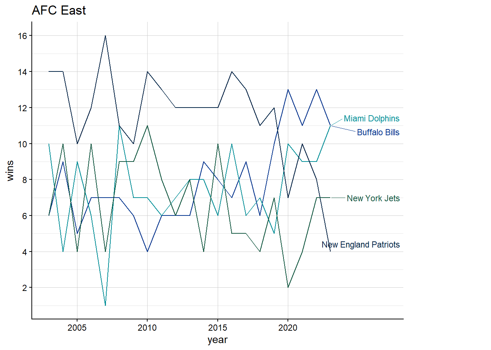
Win Loss Percentages
divisions <- nfl_data_cleaned %>%
group_by(team) %>%
summarise(avg_win_loss = mean(win_loss_perc, na.rm = TRUE)) %>%
arrange(desc(avg_win_loss))
pander(divisions)| team | avg_win_loss |
|---|---|
| New England Patriots | 0.7135 |
| Pittsburgh Steelers | 0.632 |
| Green Bay Packers | 0.614 |
| Indianapolis Colts | 0.6048 |
| Baltimore Ravens | 0.599 |
| Seattle Seahawks | 0.5836 |
| Kansas City Chiefs | 0.577 |
| Philadelphia Eagles | 0.5746 |
| Dallas Cowboys | 0.5742 |
| New Orleans Saints | 0.5733 |
| Denver Broncos | 0.5295 |
| Los Angeles Chargers | 0.5288 |
| Minnesota Vikings | 0.528 |
| Cincinnati Bengals | 0.5027 |
| Atlanta Falcons | 0.4996 |
| Buffalo Bills | 0.4904 |
| Tennessee Titans | 0.487 |
| Carolina Panthers | 0.4785 |
| San Francisco 49ers | 0.4747 |
| Chicago Bears | 0.4707 |
| Miami Dolphins | 0.4623 |
| New York Giants | 0.4566 |
| Los Angeles Rams | 0.4434 |
| Arizona Cardinals | 0.4433 |
| Houston Texans | 0.439 |
| Tampa Bay Buccaneers | 0.4355 |
| New York Jets | 0.4137 |
| Washington Commanders | 0.4016 |
| Jacksonville Jaguars | 0.3834 |
| Detroit Lions | 0.3829 |
| Las Vegas Raiders | 0.365 |
| Cleveland Browns | 0.3454 |
Analysis:
This is to see how on average these teams have been over the last 2 decades. As we can see, some teams performed better overall than other teams.
Statistical Visuals
During this section, I wanted to look at different visuals that could illustrate more statistical analysis. Some of the following would include if there is a correlation between wins and many other factors, such as total yards, point differentials, and other key factors, this could be done over all of the different seasons to see if there is a trend.
Wins with Yards(Total, rushing, and passing)
ggplot(nfl_data_cleaned, aes(x = wins, y = total_yards, color = year)) +
geom_point() +
geom_smooth(method = "lm") +
theme_calc() +
labs(
title ="Correlation Between Wins and Total Yards",
subtitle ="How many total yards a team should get in order to get the desired win total",
x = "Win Total",
y = "Total Yards in a Season"
)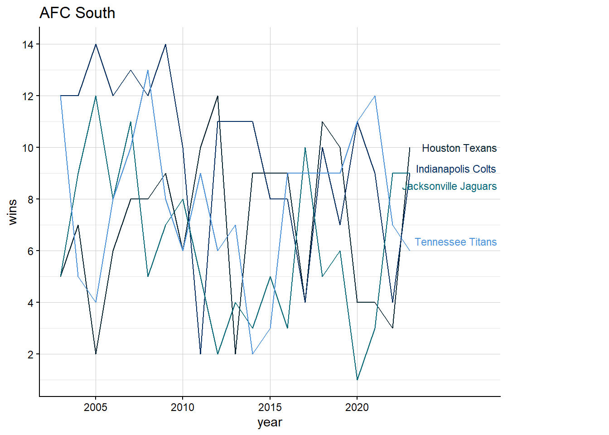
ggplot(nfl_data_cleaned, aes(x = wins, y = rush_yds, color = year)) +
geom_point() +
geom_smooth(method = "lm") +
theme_calc() +
labs(
title ="Correlation Between Wins and Rushing Yards",
subtitle ="How many rushing yards a team should get in order to get the desired win total",
x = "Win Total",
y = "Total Rushing Yards in a Season"
)
ggplot(nfl_data_cleaned, aes(x = wins, y = pass_yds, color = year)) +
geom_point() +
geom_smooth(method = "lm") +
theme_calc() +
labs(
title ="Correlation Between Wins and Passing Yards",
subtitle ="How many passing yards a team should get in order to get the desired win total",
x = "Win Total",
y = "Total Yards in a Season"
)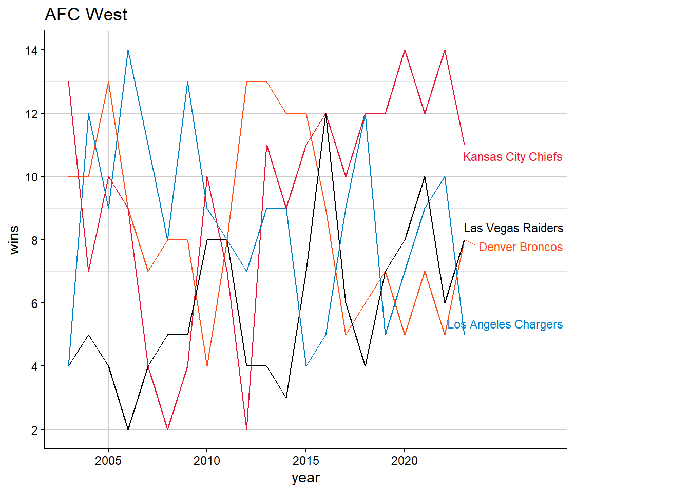
ggplot(nfl_data_cleaned, aes(x = fct_reorder(factor(wins), total_yards, .fun = quantile, .75), y = total_yards, fill = wins)) +
geom_boxplot() +
theme_calc() +
theme(
legend.position ="none"
) +
labs(
title = "Total Yards by Wins",
subtitle = "How many total yards a team should get in order to get the desired win total",
x = "Win Total",
y = "Total Rushing Yards in a Season"
)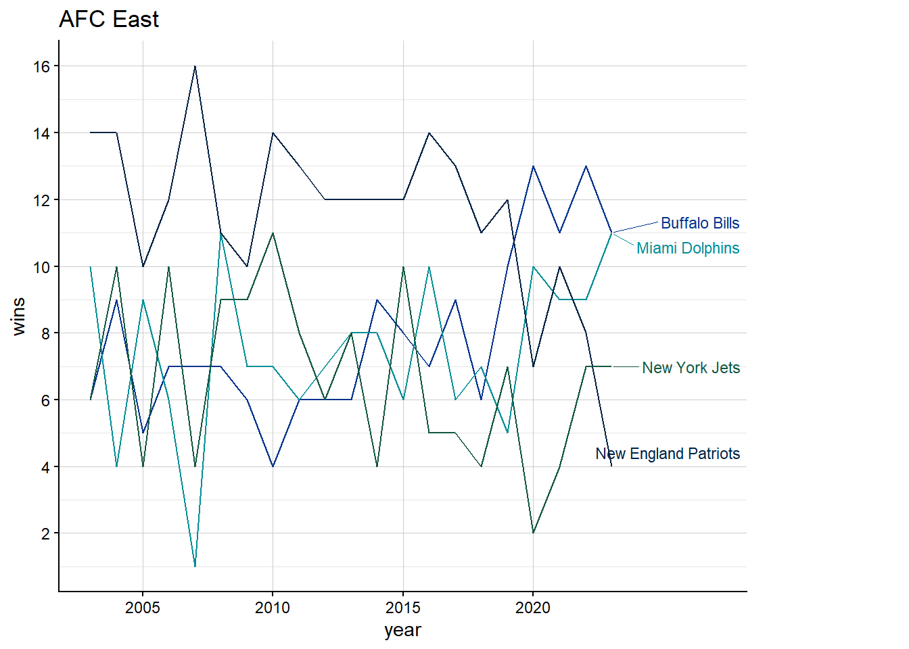
Anaylsis:
In the graph above, I created a graph that would visualize the correlation between how many wins a team would get in a season with the amount of yards it would need. From the first visual, you can see that if a team is able to get more total yards, they would be able to win more games. The same is shown with the rushing and passing yards. Following making the scatter plot correlations, I made a visual of a box plot that would order the wins based the third quantile of total yards. This shows what win totals is most likely going to happen.
Penalties to losses
ggplot(nfl_data_cleaned, aes(x = losses, y =penalties)) +
geom_point() +
geom_smooth(method = lm) +
theme_bw()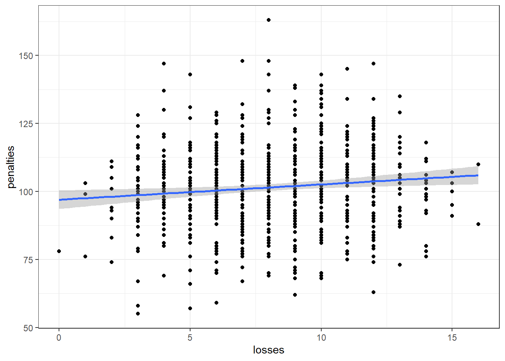
Analysis:
This graph was to see what the correlation between losses and penalties. As we can see, there is a small, yet very weak correlation. When I first did this, I thought that if a team was penalized more, they would have more losses. However, it does not show that truly.